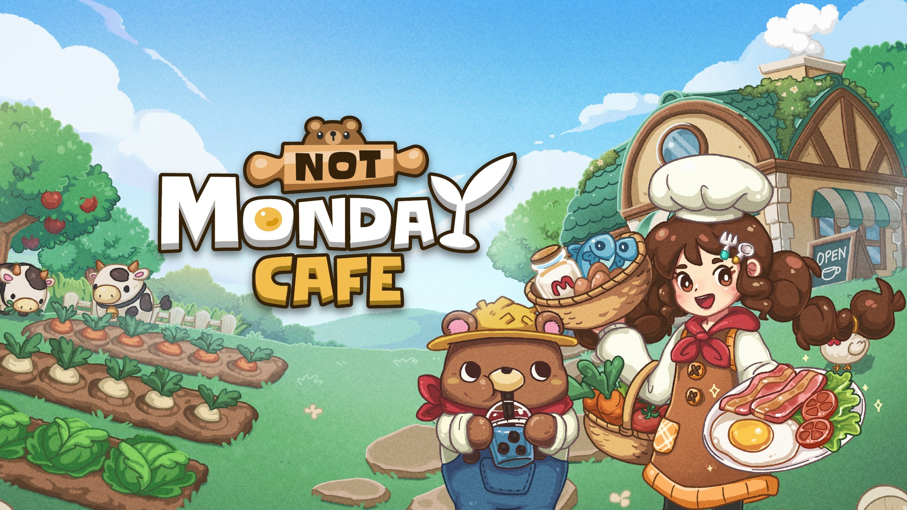
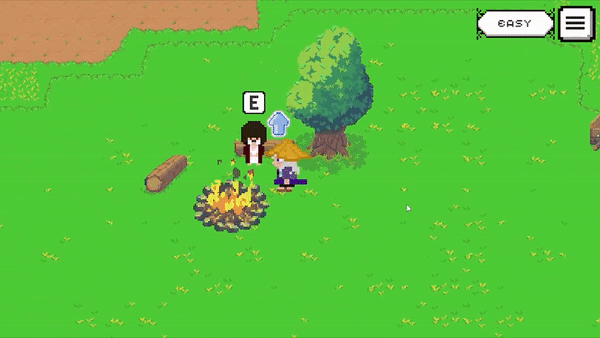
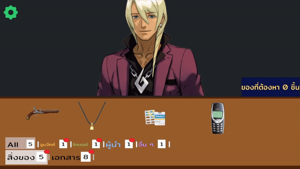
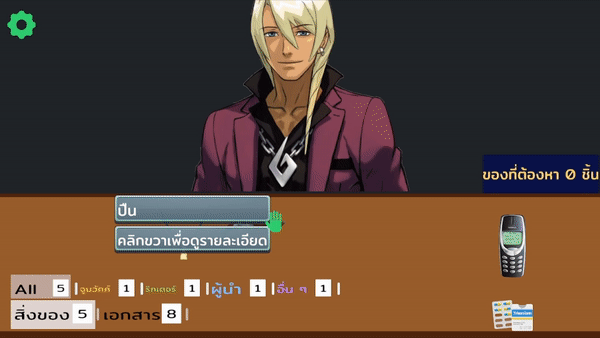
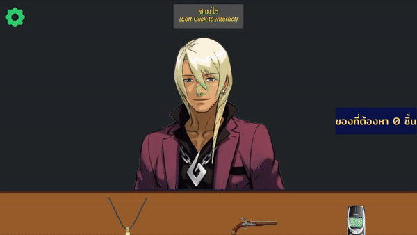
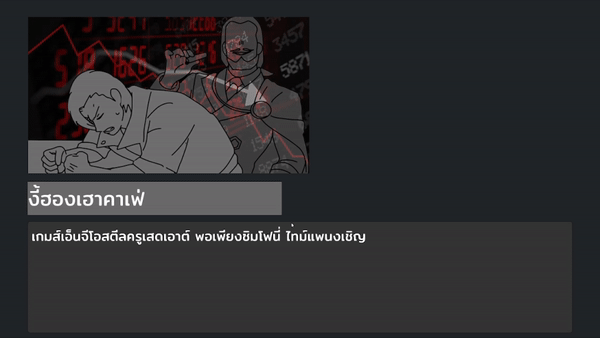
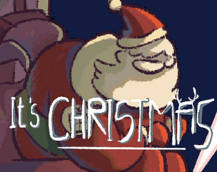

สวัสดีครับ ผมชื่อไพศาล อิงควระ เคยทำงานที่ Sunny Syrup Studio เป็นเวลา 2 ปี และเคยมีโอกาสฝึกงานกับ Urnique
Studio ผมสนใจในการพัฒนาเครื่องมือต่าง ๆ เพื่อช่วยลดงานซ้ำซ้อนให้กับทีม และในเวลาว่างผมชอบศึกษาของใหม่ ๆ
เพื่อให้ได้โอกาสเรียนรู้และพัฒนาทักษะอย่างต่อเนื่องสำหรับการเติบโตในอนาคต
Commercial Game
Spirit Mancer - Play Prime’s Best Game Of The Year
VIDEO
Spirit Mancer เป็นเกมแนว 2D Action Hack-and-Slash ที่ผสมผสานกับระบบ Deckbuilding พัฒนาโดยใช้ Unity
ตัวเกมได้รับรางวัล Play Prime’s Best Game Of The Year
และยังได้รับคัดเลือกให้เข้าร่วมการแข่งขันในรายการ LEVEL UP KL SEA Game Awards 2024
ในโปรเจกต์นี้ รับผิดชอบการพัฒนาระบบเกม เครื่องมือ (Tools) และการปรับแต่งประสิทธิภาพ (Optimization)
สำหรับการพอร์ตเกมไปยังแพลตฟอร์ม PC, PlayStation และ Nintendo Switch รวมถึงสนับสนุนทีมในการแก้ไขบั๊ก
ระบบที่พัฒนาขึ้น
ปรับปรุงการใช้ทรัพยากรด้วยการพัฒนาระบบโหลดเฉพาะเมื่อจำเป็น
และลดปัญหาการโหลดไม่ทันด้วยการใช้การโหลดแบบ Asynchronous
เพื่อให้เกมสามารถรันได้อย่างมีประสิทธิภาพบน PC, PlayStation และ Nintendo Switch
พัฒนาระบบให้ผู้เล่นสามารถปรับแต่งปุ่มควบคุมเกม (Key Binding) และพัฒนาระบบแสดงผลปุ่มใน UI
ให้รองรับการใช้งานบน PC, PlayStation และ Nintendo Switch
ใช้งานระบบ Third-Party ต่าง ๆ ในโปรเจกต์ เช่น Wwise สำหรับการจัดการเสียง และระบบ Localization
สำหรับการแปลภาษาต่าง ๆ
พัฒนาเครื่องมือสำหรับจัดการรูปภาพภายในเกม เช่น การย้ายไฟล์รูปภาพไปยังโฟลเดอร์ที่ถูกต้อง
และการตั้งค่ารูปภาพให้ตรงตามมาตรฐานที่ทีมศิลป์กำหนด
พัฒนาเครื่องมือสำหรับสร้าง Cutscene เช่น การควบคุมการเล่น Animation ในฉากต่าง ๆ
และการแสดงข้อความตามภาษาที่ผู้เล่นเลือก
พัฒนาเครื่องมือสำหรับการ Build เกมที่ให้ผู้ใช้งานสามารถเลือกประเภทการ Build ได้ตามต้องการ
ไม่ว่าจะเป็นแบบ Demo, เกมเต็ม หรือเวอร์ชันทดสอบ (Test) รวมถึงสามารถกำหนดข้อมูล Addressable
ที่ต้องการใส่ลงในเกมเพื่อช่วยในการลดขนาดไฟล์เกม
More Info
Not Monday Cafe

Not Monday Cafe เป็นเกมแนว Idle ที่มีรูปแบบการเล่นคล้ายกับ Rusty's Retirement พัฒนาโดยใช้ Unity
ในโปรเจกต์นี้ รับผิดชอบการพัฒนาระบบเกมและออกแบบ Framework สำหรับเกมที่ใช้ระบบ Grid-based
รวมถึงการพัฒนาเครื่องมือ (Tools) เพื่อสนับสนุนการทำงานในโปรเจกต์
ระบบที่พัฒนาขึ้น
พัฒนาระบบ Grid ที่แบ่งพื้นที่ทั้งหมดเป็นช่องสี่เหลี่ยมเล็ก ๆ
เพื่อใช้ในการสร้างสิ่งของหรือระบบการเดินของตัวละคร รวมถึงเป็นระบบหลักที่เชื่อมต่อระบบต่าง ๆ
ในเกมเข้าด้วยกัน เช่น การกำหนดจุดที่สามารถวางเฟอร์นิเจอร์ หรือจุดที่ตัวละครไม่สามารถเดินไปได้
พัฒนาระบบ Tile Map และเครื่องมือในการสร้าง Tile ที่ทำหน้าที่แสดงผลกำแพงและพื้นภายในเกม
พัฒนาระบบสร้างสิ่งของที่มีระบบย่อยต่าง ๆ เพื่อช่วยให้การเพิ่มฟังก์ชันหรือระบบใหม่ ๆ
ทำได้ง่ายขึ้นโดยไม่ต้องแก้ไขตัวหลัก
ซึ่งช่วยลดความซ้ำซ้อนของโค้ดและทำให้การดูแลรักษาโค้ดมีความสะดวกมากขึ้น
พัฒนาระบบเฟอร์นิเจอร์ เช่น การแสดงผลรูปภาพ การกำหนดขนาดของเฟอร์นิเจอร์ และการระบุจุดที่ AI
สามารถทำการ Interact ได้
พัฒนาระบบ Save/Load และสามารถเก็บข้อมูลในโปรแกรมเพื่อความสะดวกในการทำ Mockup หรือ Trailer ของเกม
พัฒนาระบบ Animation โดยใช้ Sprite Library เพื่อช่วยลดความยุ่งยากในการทำ Animation ซ้ำ ๆ
และพัฒนาเครื่องมือสำหรับการสร้าง Sprite Library สำหรับตัวละครในเกม
พัฒนาระบบ Framework UI เช่น การทำปุ่มที่สามารถเลือกเสียงที่จะเล่นได้เมื่อกด
หรือเล่นเอฟเฟกต์เมื่อกดหรือตอนวางเมาส์บนปุ่ม
More Info
University Projects
Place of Destination - Appears in Bitkub’s GAME TALENT SHOWCASE 2022
ภาพที่ 1 : ระบบการต่อสู้ ทิศทางของการโจมตีจะตามเมาส์ของผู้เล่น Enemy
มีทั้งหมดสี่แบบด้วยกันแต่ละแบบจะมีวิธีจัดการที่ไม่เหมือนกัน เมื่อ Enemy
ตายจะดรอปเงินเพื่อเอาไปซื้อของ และมีโอกาสของดรอปของที่เอาไปจีบตัวละครได้อีกด้วย
ภาพที่ 2 : ระบบร้านค้า
ผู้เล่นจะถูกเทเลพอร์ตมาที่นี่หลังจบการต่อสู้เพื่อซื้อของอัพเกรดตัวละคร
และการคุยกับพ่อค้าจะมีตัวเลือกให้ผู้เล่นได้เลือกระหว่างการ Reroll Item และการ Heal
เลือดตัวเองด้วยการจ่ายเงิน
ภาพที่ 3 : ระบบเลือกตัวละครจะมีตัวละครทั้งหมดสองตัวด้วยกันคือ Ronin และ
MarksMan ทั้งสองตัวจะมีการเล่นที่แตกต่างกัน เช่น Ronin เป็นตัวละครตีใกล้ที่เน้นให้ Enemy
ตีก่อนแล้วเข้าไปตี และ MarksMan ที่เป็นตัวละครยิงไกลที่เน้นการเดินไปโจมตีไป

ภาพที่ 4 : ระบบบทสนทนาได้ใช้ Ink
ช่วยในการเช็คว่าเนื้อเรื่องดำเนินถึงจุดไหนแล้วแสดงบทพูดของตัว NPC และ
ยังมีระบบความสัมพันธ์ของ NPC ที่ผู้เล่นจีบได้ด้วยการให้ของที่คล้ายกับ Stardew Valley
และเนื้อเรื่องของ NPC ที่จีบได้มีให้อ่านจนจบได้
Place of Destination เป็นเกมแนว 2D Action Roguelike Dating Sim
คุณจะได้รับบทเป็นนักผจญภัย ที่ต้องได้ออกสำรวจดันเจี้ยนต่าง ๆ คุณจะต้องเอาชนะมอนสเตอร์ในแต่ละรอบ
และเก็บเงินมาอัพเกรดตัวละครจากการชื้อ Item ต่าง ๆ
ให้แข็งแกร่งขึ้นเพื่อให้อยู่รอดถึงรอบสุดท้ายที่จะมีบางอย่างรอคุณอยู่
และยังมีตัวละครที่คุณสามารถจีบได้ด้วยให้ของขวัญที่สามารถหาได้ในการต่อสู้เท่านั้น
จุดเด่นของเกมนี้การที่เราเห็นพัฒนาการของตัวละคร เช่นโจมตีแรงขึ้น วิ่งได้ไวขึ้น เป็นต้น
และก็มีความท้าทายในตัวเอง
ในเกมนี้มีคนทำทั้งหมด 4 คน ผมรับหน้าที่เป็นโปรแกรมเมอร์ และ Project Lead
ภายในงานนี้ผมเป็นคนทำระบบทุกอย่างภายในเกม เช่น ระบบการต่อสู้ ระบบร้านค้า ระบบการอัพเกรดตัวละคร
การใส่ Animation ให้ตัวละครต่าง ๆ และระบบบทสนทนาที่ได้ใช้ตัว Ink เข้ามาช่วยในการทำ
เกมนี้ได้เข้าร่วมการแข่งขันในรายการ GAME
TALENT SHOWCASE 2022 Presented by Bitkub และยังได้เข้ารอบที่มีทั้งหมดสามสิบทีม
More Info
Internship Project
ภาพที่ 1 : ระบบหยิบสิ่งของและระบบ Hover สิ่งของ
เราสามารถหยิบสิ่งของไปมาได้เหมือนกับในเกม Papers, Please และเมื่อเราเอาเมาส์ไป Hover
สิ่งของจะทำให้ Icon ของเมาส์ก็จะเปลี่ยนตามสิ่งของที่เรา Hover และมีตัว UI บอกรายละเอียดต่าง
ๆ

ภาพที่ 2 : ระบบเลือก Tag สิ่งของและระบบแจ้งเตือน เมื่อเรากดเลือก Tag
สิ่งของแล้ว สิ่งของจะโชว์ขึ้นมาให้เราได้ดู
และเมื่อเรามีสิ่งของอันใหม่เพิ่มเข้ามาตัวเกมก็จะขึ้นแจ้งเตือนสีแดง ๆ บนปุ่ม Tag
และจะหายไปเมื่อเรากดเลือก Tag ที่มีแจ้งเตือน

ภาพที่ 3 : ระบบดูรายละเอียดสิ่งของ เมื่อเรากดคลิกขวาที่สิ่งของ
ก็จะเปิดใช้ระบบนี้ขึ้นมา และแสดงข้อมูลที่เกี่ยวกับสิ่งของชิ้นนั้นๆ และสามารถ Zoom
เข้าไปดูสิ่งของได้อีกด้วย ก่อนหน้าที่สามารถหมุนได้แต่ว่าโดนตัดออกไป
ภาพที่ 4 : ระบบปริศนา เราจะต้องเอาสิ่งของไปใส่ไว้ในช่องตรงกลาง เมื่อใส่ผิด
สิ่งของก็จะเด้งกลับไปอยู่ที่เดิม เมื่อเราใส่ถูกต้อง สิ่งของก็จะเด้งกลับไปที่เดิม
และจะเกิดเหตุการณ์ตามที่เราได้กำหมดไว้

ภาพที่ 5 : ระบบบทสนทนา ระบบนี้เป็น Tool จาก Asset Store
เราสามารถพูดคุยกับตัวละครได้ และมีตัวเลือกให้ถามตอบกับตัวละครอีกด้วย และ
เราสามารถใส่เหตุการณ์ต่าง ๆ เมื่อเราถามได้ถูกต้อง

ภาพที่ 6 : ของในภาพนี้คือการเอาตัวระบบบทสนทนา ที่เป็น Tool จาก Asset Store
มาเขียนเพิ่มเช่น ระบบขึ้นรูปประกอบ ระบบแจ้งเตือนว่ามีสิ่งของอันใหม่
และสามารถเปิดดูรายละเอียดได้ทันที และระบบเล่นเพลงตามเหตุการณ์ต่าง ๆ
ภาพที่ 7 : ระบบเลือกเพลง เมื่อเราเอาเมาส์ไปวางไว้ที่ชื่อเพลง
เพลงก็จะเล่นออกมาให้เราได้ลองฟัง และเราสามารถกดเลือกเพลง
หรือเอาออกเพลงได้ตามที่เราต้องการ
โปรเจกต์ที่ได้ทำร่วมกับทาง Urnique Studio แต่ไม่สามารถลงเกี่ยวกับรายละเอียดของโปรเจกต์ได้
โปรเจกต์นี้มีคนทำทั้งหมด 2 คน ผมรับหน้าที่เป็น Game Programmer
ผมได้เป็นคนเขียนระบบทั้งหมดภายในเกม เกมนี้คล้าย ๆ กับเกม Papers, Please
และในโปรเจกต์นี้ยังได้ใช้ Tool จาก Asset Store เข้ามาปรับใช้ในงาน และยังได้เขียนตัวอ่านข้อมูลจาก
Json ที่สามารถเอาข้อมูลเข้าได้อย่างรวดเร็วเช่น การใส่ข้อมูลใน Item
ถ้าใส่ข้อมูลด้วยมือจะใช้เวลาประมาณ 1 - 2 ชั่วโมงแต่ถ้าใช้ตัวอ่านที่ผมเขียนขึ้นมาใช้เวลาแค่ 1 - 2
นาที
Let's Go My Car
ภาพที่ 1 : ระบบขับรถได้ใช้ Mirror ช่วยทำในส่วนของ Multiplayer
เช่นการเช็คว่ารถคันไหนเป็นของผู้เล่น
และผมออกแบบการเคลื่อนที่ของรถทำอยู่บนเครื่องของผู้เล่นเพราะต้องการให้มีความลื่นไหลมากที่สุด
ภาพที่ 2 : ระบบตารางคะแนนหลังจบเกม
เมื่อผู้เล่นเข้าถึงเส้นชัยแล้วจะเปิดหน้าคะแนนขึ้นมาโดยอัตโนมัติแล้วเก็บเวลาของผู้เล่นคนนั้นไว้
และทำแบบนี้จนครบทุกคน และทุกคนต้องเข้าเส้นชัยถึงจะสามารถออกจากเกมได้
ภาพที่ 3 : ระบบล็อบบี้ ในหน้านี้ผู้เล่นสามารถกดเลือกรถสีต่าง ๆ
ได้แต่ว่าการเลือก Map นั้นจะมีแค่ Host เท่านั้นที่เลือกได้และชื่อของผู้เล่นนั้นจะมาจาก Steam
ของผู้เล่นเอง และต้องให้ทุกคนกดพร้อม Host ถึงจะเรื่มเกมได้
ภาพที่ 4 : ระบบเข้าล็อบบี้ เมื่อมีคนกดสร้างห้องไว้ ห้องจะแสดงขึ้นอยู่ที่บนสุด
และตัวอักษรจะมีสีเขียว ในการเป็น Client ผู้เล่นจะสามารถทำทุกอย่างได้เหมือน Host
แต่จะไม่สามารถเลือก Map กับกด Start Game ไม่ได้
Let's Go My Car เป็นเกม Racing Multiplayer ที่ผู้เล่นสามารถเล่นกับเพื่อนได้ถึง 4 คน
ผ่านทางเซิร์ฟเวอร์ของ Steam
เกมนี้ได้ใช้ Tool เข้ามาช่วยคือ Mirror
ใช้ทำระบบที่เกี่ยวกับ Multiplayer ต่าง ๆ ภายในเกม และ Steamworks
ใช้ในการทำระบบล็อบบี้ที่ใช้ตัวเซิร์ฟเวอร์ของ Steam เป็นตัวกลางของการ Host เกม
ในเกมนี้มีคนทำทั้งหมด 2 คน ผมได้รับหน้าที่เป็นโปรแกรมเมอร์ที่เขียนระบบทั้งหมดภายในเกม
เช่นระบบล็อบบี้ ระบบการเคลื่อนที่ของรถ และระบบอย่างการเข้าล็อบบี้เป็นต้น
Link
Game Jam
Knock Knock Cozy
เข้าร่วมใน Cozy Fall Jam
และได้อันดับที่ 8 เกมนี้ผมได้ทำทำระบบเกมทั้งหมดและและทำตัวการเคลื่อนไว้ของตัวละครโดยใช้ Dotween
Link
it's Christmas?!

เข้าร่วมใน Cozy Winter Jam
และได้อันดับที่ 4 เกมนี้ผมทำระบบทั้งหมดในเกมและทำงานรวมกับ Game Designer
Link
itch.io
LifeForceTenka Clone
เกมนี้ถูกพัฒนาด้วย Unreal Engine 4 เรียนรู้เกี่ยวกับการทำเกมและใช้ Asset จาก
UE4
FPS : Lifeforce Tenka Clone
Link
Train To Hell - VR
Train To Hell เป็นเกมที่พัฒนาให้กับเครื่อง VR ในเกมนี้มีคนทำทั้งหมด 2 คน
ผมได้รับหน้าที่เป็นโปรแกรมเมอร์ที่เขียนระบบทั้งหมดภายในเกม
Link